The networking app for events — in person or online
Chart a course to the people worth meeting.
The networking layer for your event, in person or online. Record a short intro and Nostrautica tells you who's worth meeting, and why — in plain language. Bring your Nostr identity (npub) or get one on the way in; it's the same key you carry from event to event.
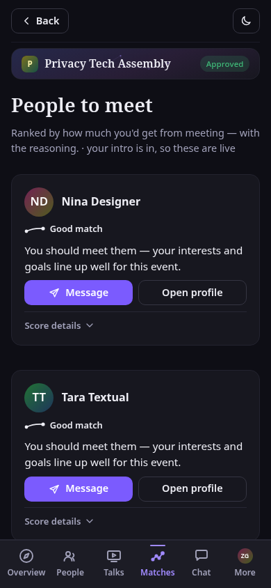
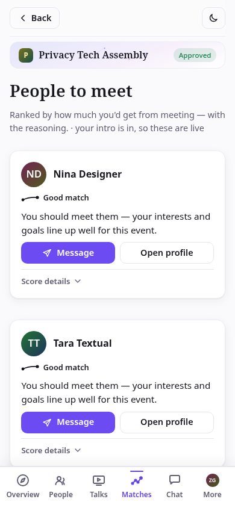
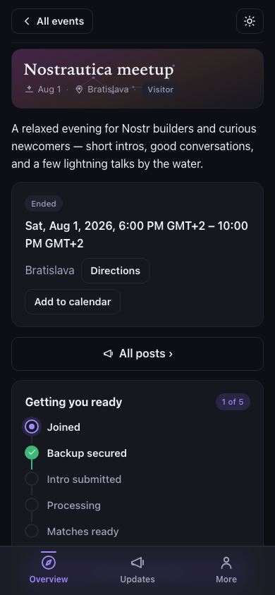
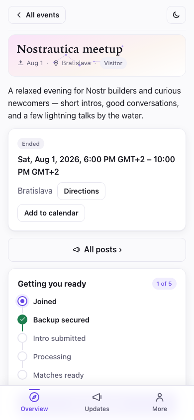
The problem
A great room. The wrong conversations.
You end up talking to whoever's next to you at the coffee machine, while the person who could actually help you sits three tables over. You never meet. Online events fail the opposite way: a wall of usernames, and no idea which handful are worth a message.
Nostrautica treats networking as the main event, not a hallway accident.
How it works
A reason to meet.
Record a short intro, video, audio, or just text. Nostrautica reads it alongside your public Nostr posts and works out who you should talk to, then explains why in a plain sentence, not a score.
Record a short intro
Ninety seconds of video, audio, or just typed text — whatever you're comfortable with. Say who you are, what you're building, what you're hoping to find here.
The coordinator reads the room
Your intro gets transcribed and combined with your public Nostr activity — your posts, your follows, what you're actually about — into a profile only this event can see.
Get told who to meet, and why
Every pair is scored on how alike you are and how well you'd complement each other, then explained in plain language: “she designs interfaces, you write cryptography — your project needs exactly that.”
Walk in with a plan
Your ranked list keeps updating as more people join. Work it at the venue — it's the best icebreaker there is.
Two ways to run it
Keep your stage. Or set it on fire.
Nostrautica's matching works the same either way. The format is your call, not ours.
A normal conference, sharper
Keep your speakers, your schedule, your stage. Nostrautica layers on top. Everyone gets recommendations on who to find — whether that's the hallway or the DMs.
- Works with any agenda you already run
- Matches keep updating as people check in
- Talks become matching signal too
Prerecorded talks, live everything else
Speakers record ahead of time and everyone watches before they arrive. That frees the whole venue, the whole day, for the conversations your matches actually pointed you toward.
- No stage to build, no AV budget to blow
- Talks still count as matching signal
- The room becomes the main event
For attendees
Show up already knowing who to find.
Just a display name to start — no email, no password, no crypto homework. Already on Nostr? Sign in with your key (npub) and skip the setup. New to it? You leave with a real identity that's yours to keep.
- Record your intro in whatever language you're comfortable in
- Get a ranked, reasoned list of people to meet
- See who you already follow, and who follows you
- Message anyone directly, end-to-end encrypted
- Leave with a real Nostr identity you carry to the next event
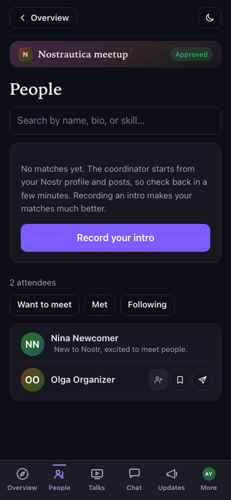
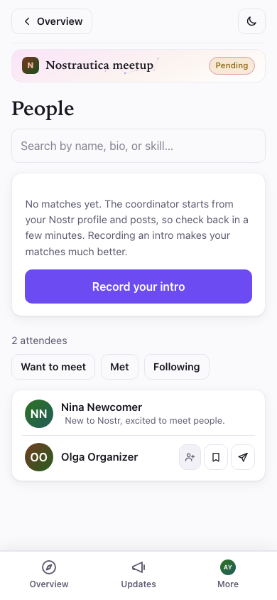
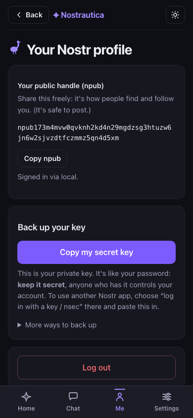
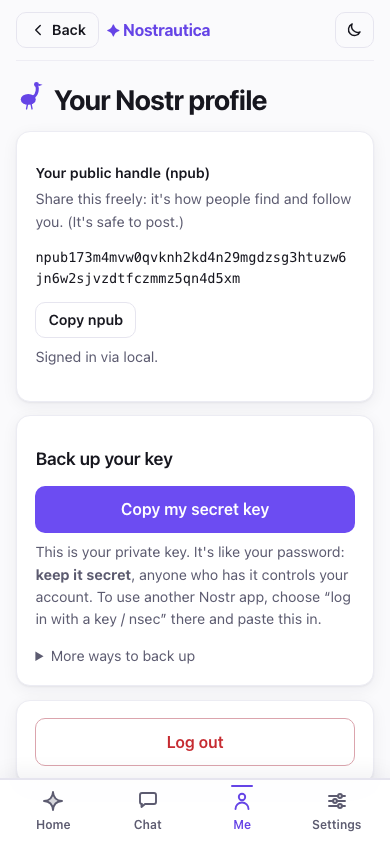
For organizers
Run the whole thing from your phone.
Create an event, open the door, and let the coordinator handle the matching. There's no server to babysit: the app publishes to Nostr relays and Blossom, and that's the entire backend.
- Manual approval, invite codes, or both — your call
- Attach an AI coordinator for matchmaking, or run without one
- Public updates or members-only posts, encrypted to your attendees alone
- A custom event page and your own theme CSS
- Live talks or prerecorded — including the no-stage format
- Encrypted group chat that survives into mobile Nostr apps
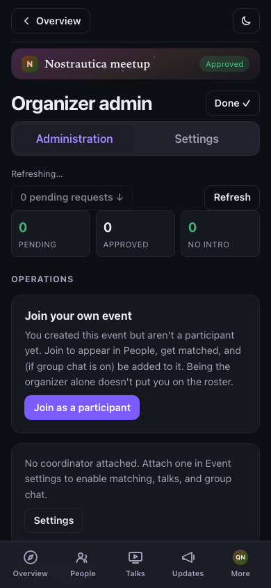
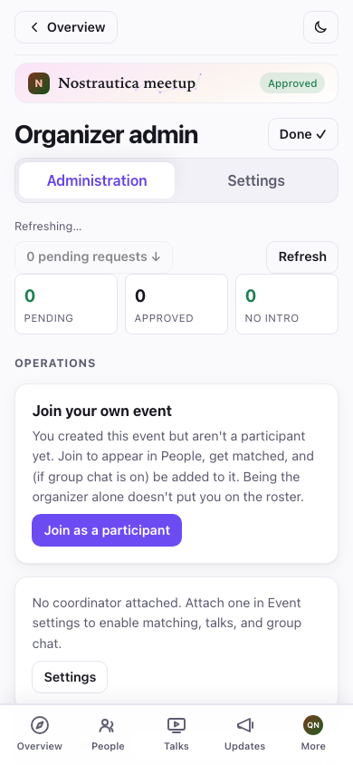
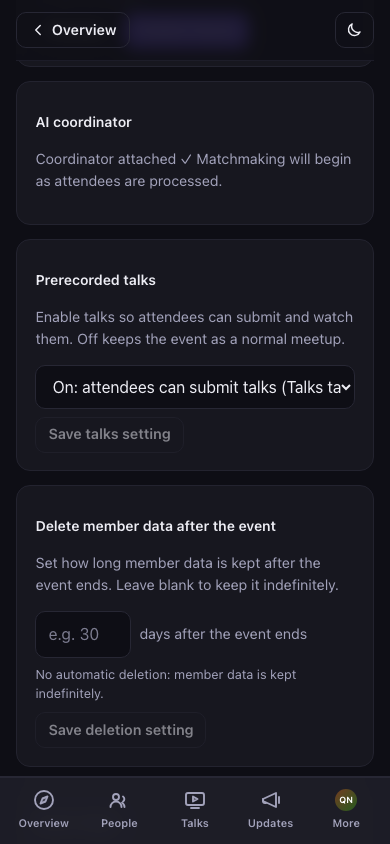
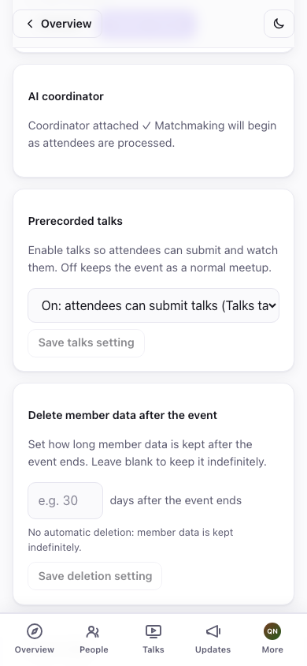
Own the aftermath
Registering isn't a sign-up. It's an identity.
The first time you join, Nostrautica sets up a real Nostr keypair for you — or you sign in with the npub you already have. It's the same kind Primal, Amethyst, Damus, and Yakihonne use, and the same identity every time: this event, the next, any Nostr app — never a fresh login per event. Your profile, your follows, the people you met: none of it lives in a database Nostrautica controls, because there isn't one.
Paste your key into any of those apps afterward and you're already there: already following the people you met, already posting to the same network.
Nostr-native
Every piece of app state is a Nostr event. Nothing proprietary underneath.
Static frontend, no server
The app is HTML, JS, and CSS talking only to relays and Blossom. Deployable anywhere, including as an nsite hosted on Nostr itself.
One honest exception
The AI coordinator can read event content — it has to, to transcribe your intro. It's operator-chosen infrastructure, and the app always names exactly whose.
Free and open source
MIT licensed. Read the code, run your own coordinator, fork the whole thing.
Privacy, by tier
Not everything is encrypted the same way. On purpose.
Some of what you share is meant to be public. Some is meant for the room. Some is meant only for you. Nostrautica keeps them apart instead of pretending one setting fits all.
Event page, your profile, your posts
Anyone with the linkIntro videos, the roster, the directory
Approved attendees onlyYour match list and its reasoning
Only youFavorites, notes, your “want to meet” tags
Only you, alwaysThe coordinator can decrypt event-tier content — it has to, to do the transcribing. It's infrastructure the organizer chose, and the app names it plainly before you record a word.
Set a course.
Whether you're running the event or walking into one, the next conversation that matters is one intro video away.